Overview
This article will demonstrate a random assortment of content, including some of which is quite advanced.
- Change the
statof the layer - Change the
positionof the layer - Use
+ *_mode_*where axis-lines and gridlines are not as wanted - Reorder and/or reverse categorical variables
- Drop unused categorical variable values
- Transform scales to
"log"etc - Change the
*_positionof positional axes - Add contrasting dark or light text on polygons
- Use opacity with to emphasise/demphasise.
- Understand
oob&clip - Use delayed evaluation
- Correct the default orientation
library(dplyr)
library(tidyr)
library(forcats)
library(stringr)
library(ggplot2)
library(scales)
library(ggblanket)
library(patchwork)
library(palmerpenguins)
set_blanket()
penguins2 <- penguins |>
labelled::set_variable_labels(
bill_length_mm = "Bill length (mm)",
bill_depth_mm = "Bill depth (mm)",
flipper_length_mm = "Flipper length (mm)",
body_mass_g = "Body mass (g)",
) |>
mutate(sex = factor(sex, labels = c("Female", "Male")))1. Change the stat of the layer
The default stat of each gg_* function can
be changed.
penguins2 |>
gg_pointrange(
stat = "summary",
x = species,
y = flipper_length_mm,
)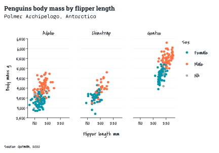
library(ggforce)
ggplot2::economics |>
slice_head(n = 35) |>
gg_path(
stat = "bspline", n = 100,
x = date,
y = unemploy,
y_label = "Unemployment",
linewidth = 1,
) 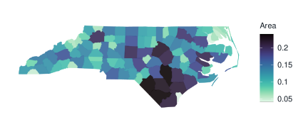
2. Change the position of the layer
The default position of each gg_* function
can be changed.
penguins2 |>
gg_point(
position = ggbeeswarm::position_quasirandom(),
x = sex,
y = flipper_length_mm,
col = sex,
mode = light_mode_n(),
) 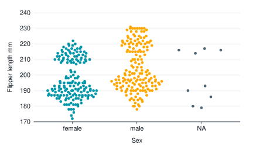
3. Use + *_mode_* where axis-lines and gridlines are
not as wanted
Sometimes the plot might guess the removal of gridlines and
axis-line/ticks incorrectly. In these situations, you can
+ *_mode_* on to the plot, and then remove whatever you
want.
msleep |>
gg_point(
x = bodywt,
y = brainwt,
col = vore,
col_labels = str_to_sentence,
x_transform = "log10",
y_transform = "log10",
) +
light_mode_r() +
guides(
x = guide_axis_logticks(),
y = guide_axis_logticks(),
) 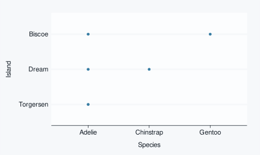
4. Reorder and/or reverse categorical variables
ggblanket requires unquoted variables only for x,
y, col, facet,
facet2 and alpha. You can often manipulate the
data prior to plotting to achieve what you want (e.g. using
tidyr::drop_na, forcats::fct_rev and/or
forcats::fct_reorder).
p1 <- diamonds |>
count(color) |>
gg_col(
x = n,
y = color,
width = 0.75,
x_labels = \(x) x / 1000,
x_label = "Count (thousands)",
subtitle = "\nDefault order"
)
p2 <- diamonds |>
count(color) |>
mutate(color = fct_rev(fct_reorder(color, n))) |>
gg_col(
x = n,
y = color,
width = 0.75,
x_labels = \(x) x / 1000,
x_label = "Count (thousands)",
subtitle = "\nRe-orderered"
)
p1 + p2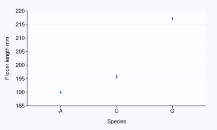
5. Drop unused categorical variable values
ggblanket keeps unused factor levels in the plot. If users wish to
drop unused levels they should likewise do it in the data prior to
plotting using forcats::fct_drop.
p1 <- diamonds |>
count(color) |>
filter(color %in% c("E", "G", "I")) |>
gg_col(
x = n,
y = color,
width = 0.75,
x_labels = \(x) x / 1000,
x_label = "Count (thousands)",
subtitle = "\nUnused levels kept",
)
p2 <- diamonds |>
count(color) |>
filter(color %in% c("E", "G", "I")) |>
mutate(color = forcats::fct_drop(color)) |>
gg_col(
x = n,
y = color,
width = 0.75,
x_labels = \(x) x / 1000,
x_label = "Count (thousands)",
subtitle = "\nUnused levels dropped",
)
p1 + p2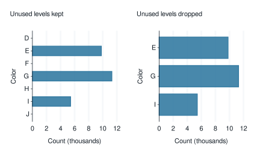
6. Transform scales to "log" etc
Transform objects (e.g. transform_log() or character
strings of these can be used to transform scales - including combining
these.
p1 <- pressure |>
gg_point(
x = temperature,
y = pressure,
x_breaks = breaks_pretty(n = 3),
y_breaks = breaks_pretty(n = 4),
subtitle = "\nDefault",
)
p2 <- pressure |>
gg_point(
x = temperature,
y = pressure,
x_breaks = breaks_pretty(n = 3),
y_breaks = breaks_pretty(n = 4),
y_transform = "reverse",
subtitle = "\nReverse",
)
p3 <- pressure |>
gg_point(
x = temperature,
y = pressure,
x_breaks = breaks_pretty(n = 3),
y_transform = "log10",
subtitle = "\nLog10",
)
p4 <- pressure |>
gg_point(
x = temperature,
y = pressure,
x_breaks = breaks_pretty(n = 3),
y_transform = c("log10", "reverse"),
subtitle = "\nLog10 & Reverse",
)
(p1 + p2) / (p3 + p4)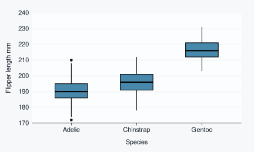
7. Change the *_position of positional axes
Positional axes can be changed using *_position.
Note that for x_position = "top", a caption must be
added or modified to make this work nicely with a *_mode_*
theme.
economics |>
gg_line(
x = date,
y = unemploy,
col = date,
y_position = "right",
x_position = "top",
caption = "",
title = "Unemployment",
subtitle = "1967\u20132015",
) 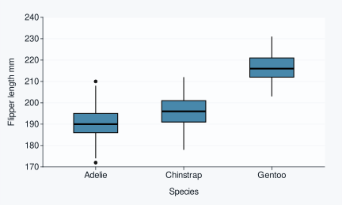
8. Add contrasting dark or light text on polygons
Text on polygons can be coloured with a dark or light colour that is
determined based on the underlying polygon colour using
!!!aes_contrast(). This method was developed by Teun van
den Brand (@teunbrand).
penguins2 |>
count(species, sex) |>
gg_col(
x = sex,
y = n,
col = species,
position = position_dodge2(preserve = "single"),
width = 0.75,
) +
geom_text(
mapping = aes(label = n, !!!aes_contrast()),
position = position_dodge2(width = 0.75, preserve = "single"),
vjust = 1.33,
show.legend = FALSE,
)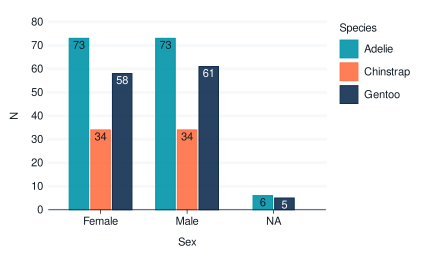
penguins2 |>
count(species, sex) |>
gg_col(
position = position_dodge2(preserve = "single"),
x = n,
y = sex,
col = species,
width = 0.75,
mode = dark_mode_r(),
) +
geom_text(
mapping = aes(label = n, !!!aes_contrast("dark")),
position = position_dodge2(width = 0.75, preserve = "single"),
hjust = 1.25,
show.legend = FALSE,
)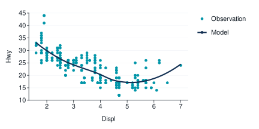
9. Use opacity to emphasise/demphasise
Use opacity with mapping = aes(alpha = ...),
col = ..., and col_palette to
emphasise/demphasise parts of the visualisation.
p1 <- penguins2 |>
drop_na(sex) |>
gg_density(
x = flipper_length_mm,
x_breaks = breaks_pretty(n = 3),
y_breaks = breaks_pretty(n = 4),
colour = alpha(orange, 0.33),
fill = orange,
alpha = 0.1,
subtitle = "\nOpacity fill 0.1 & outline 0.33"
)
p2 <- penguins2 |>
drop_na(sex) |>
gg_density(
x = flipper_length_mm,
col = sex,
x_breaks = breaks_pretty(n = 3),
y_breaks = breaks_pretty(n = 4),
col_palette = c(orange, "#78909C"),
subtitle = "\ncol variable"
)
p3 <- penguins2 |>
drop_na(sex) |>
gg_density(
x = flipper_length_mm,
col = sex,
mapping = aes(alpha = sex),
x_breaks = breaks_pretty(n = 3),
y_breaks = breaks_pretty(n = 4),
col_palette = c(orange, "#78909C"),
subtitle = "\ncol and alpha variable",
) +
guides(colour = "none", fill = "none", alpha = "none") +
scale_alpha_manual(values = c(0.5, 0.1))
p4 <- penguins2 |>
drop_na(sex) |>
gg_density(
x = flipper_length_mm,
col = sex,
mapping = aes(alpha = sex),
x_breaks = breaks_pretty(n = 3),
y_breaks = breaks_pretty(n = 4),
col_palette = c(orange, alpha("#78909C", 0.25)),
subtitle = "\ncol and alpha variable & outline opacity",
) +
scale_alpha_manual(values = c(0.5, 0.1))
(p1 + p2) / (p3 + p4)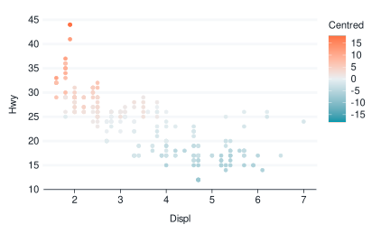
10. Understand oob & clip
By default, ggblanket keeps values outside of the limits
(*_oob = oob_keep) in calculating the geoms and scales to
plot. It also does not clip anything outside the cartesian
coordinate space by default
(coord = ggplot2::coord_cartesian(clip = "off")).
ggplot2 by default drops values outside of the limits in calculating
the geoms and scales to plot (oob_censor), and clips
anything outside the cartesian coordinate space
(coord = ggplot2::coord_cartesian(clip = "on")).
This needs to be considered particularly when you are using
x_limits or y_limits, and your
stat is not "identity".
p1 <- economics |>
gg_smooth(
x = date,
y = unemploy,
x_labels = \(x) stringr::str_sub(x, 3, 4),
subtitle = "\nNo x_limits set",
se = TRUE) +
geom_vline(xintercept = c(lubridate::ymd("1985-01-01", "1995-01-01"))) +
geom_point(alpha = 0.3)
p2 <- economics |>
filter(between(date, lubridate::ymd("1985-01-01"), lubridate::ymd("1995-01-01"))) |>
gg_smooth(
x = date,
y = unemploy,
se = TRUE,
x_labels = \(x) stringr::str_sub(x, 3, 4),
subtitle = "\nx data filtered") +
geom_point(alpha = 0.3)
p1 + p2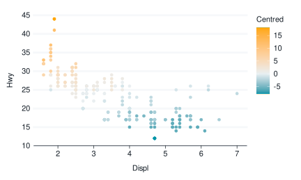
p3 <- economics |>
gg_smooth(
x = date,
y = unemploy,
se = TRUE,
x_limits = c(lubridate::ymd("1985-01-01", "1995-01-01")),
x_labels = \(x) stringr::str_sub(x, 3, 4),
subtitle = "\nx_limits set (with default oob_keep)",
) +
geom_point(alpha = 0.3)
p3 + plot_spacer()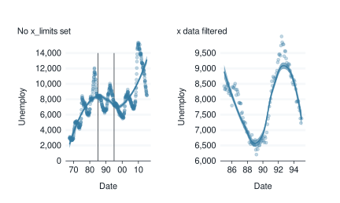
p4 <- economics |>
gg_smooth(
coord = coord_cartesian(clip = "on"),
x = date,
y = unemploy,
se = TRUE,
x_limits = c(lubridate::ymd("1985-01-01", "1995-01-01")),
x_labels = \(x) stringr::str_sub(x, 3, 4),
subtitle = "\nx_limits set (with default oob_keep)\n& cartesian space clipped") +
geom_point(alpha = 0.3)
p5 <- economics |>
gg_smooth(
x = date,
y = unemploy,
se = TRUE,
x_limits = c(lubridate::ymd("1985-01-01", "1995-01-01")),
x_labels = \(x) stringr::str_sub(x, 3, 4),
x_oob = oob_censor,
subtitle = "\nx_limits set & oob_censor") +
geom_point(alpha = 0.3)
p4 + p511. Use delayed evaluation
As the x, y, and col aesthetic
arguments require a unquoted variable, you cannot apply a function to
these. However, you can for aesthetics within the mapping
argument. This can be used for delayed evaluation with the
ggplot2::after_stat function.
penguins2 |>
gg_histogram(
x = flipper_length_mm,
mapping = aes(y = after_stat(density)),
facet = species,
)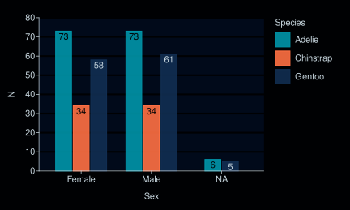
faithfuld |>
gg_contour(
x = waiting,
y = eruptions,
z = density,
mapping = aes(colour = after_stat(level)),
bins = 8,
)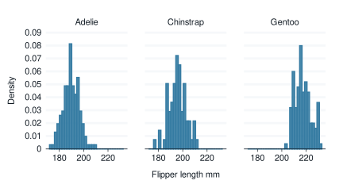
12. Correct the default orientation
The gg_* function guesses the orientation of the plot to
determine how to make continuous axes and what side-effects to have on
the provided mode.
If it guesses incorrectly, use either the x_orientation
or y_orientation argument.
(Note in the example below, the two histograms have different shapes, because they have different limits).
p1 <- penguins |>
gg_histogram(
y = flipper_length_mm,
subtitle = "\nDefault orientation",
)
p2 <- penguins |>
gg_histogram(
y = flipper_length_mm,
y_orientation = TRUE,
subtitle = "\nCorrected orientation",
)
p1 + p2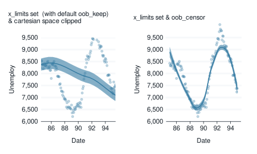